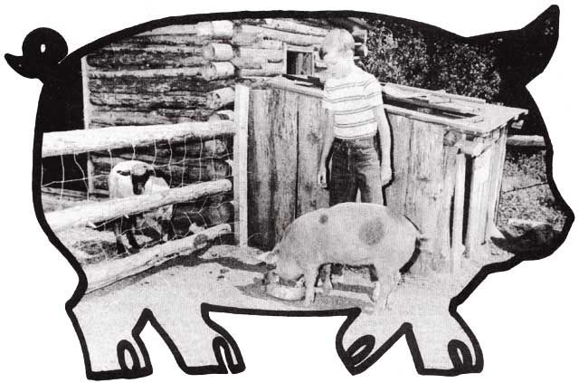

Most of us who have returned to the land within the past few years are products of the cities and suburbs. As such, we've had little or no previous experience with the everyday realities of homestead living.
The skills and know-how which were accepted as an ordinary part of rural life a hundred years ago, therefore, must-for the most part-be relearned today through books or periodicals such as the one you're now reading. Unfortunately, however, if one delves very deeply into just about any subject he is likely to come across some contradictions. There are, in other words, many more ways than one to skin a cat . . . and, if my experience is any indication, there must be at least a hundred ways to skin a hog.
We bought an eight-week-old pig last April for $25.00 (the going local price). At the time we were blissfully ignorant of the many different opinions about proper hog culture . . . which was probably to our advantage, since we managed to raise our Shirley Pearl to a happy, healthy 250 pounds without being confused with the "facts". It wasn't until I began researching this article that I became fully aware of the many schools of thought-most of which conflict with each other-on raising pigs. Maybe you're aware of these honest differences of opinion, maybe not. Still, if you think you can stand yet another point of view, I'd like to tell you of our experiences with homestead pork production.
In MOTHER NO. 18, on page 70, Sarah Funk tells us, "The fact is that a lone hog doesn't grow well at all (he likes to have company). " This opinion is echoed, in even stronger terms, by John Seymour in MOTHER NO. 29; " I will personally have no part in suggesting to anybody that they should buy one [pig]. I have made the point that the husbandman is a benevolent ruler and not a tyrant, and a benevolent ruler does not keep anybody in solitary confinement. "
Had we been informed of this before we purchased Shirley Pearl, we probably would have thought twice about the project . . . since our finances at that time would not support the expense of feeding two animals. As it was, we were able to get a limited amount of highquality garbage from a friend who runs a local restaurant. Even with this and lots of greens from our garden, however, Shirley's diet had to be supplemented with grain from the feedstore. (We kept a fivegallon can of corn and barley on the stove because cooking increased the mixture's volume and palatability many times.) The cost of this ration-almost $10.00 per hundred pounds-made us painfully aware that one acre of land is not enough for self-sufficiency if you expect to raise feed for your livestock in addition to a regular garden. Two hogs would have broken our budget in two, and we'd have been hard pressed to preserve that much meat.
Anyhow, as it turned out, Shirley wasn't lonely (she lived next door to the goats, and spent many an hour conversing with them through the fence) . . . and she put on all the weight we could have hoped for.
Now, when one is raising an animal for food, he is always aware at the back of his mind that the day will come when that creature must be slaughtered. This killing business has always been a problem with me. At one point in my life, I even became a vegetarian for that reason . . . but soon had to admit that I had eaten meat all my life and that I still liked it. This led me to accept the fact that plants and animals live upon this earth in a harmonious relationship, and that death and life are but two halves of one reality which is the same for all living things.
Shirley was a friendly and intelligent creature, and all of us became very much attached to her. We didn't attempt to think of her as "the pig" or deny ourselves the pleasure of her personality . . . which was every bit as unique as the cats', the dog's, or the goats'. Many articles about raising hogs recommend having the- killing and butchering done by a professional slaughterhouse . . . but this, in our opinion, is a cop-out. If one is going to eat meat, we feel, he should take the responsibility of killing it (which, to be sure, would probably lead to there being a lot more vegetarians in the world). So, guided by this philosophy, we did our own butchering and Shirley Pearl died the way she lived: surrounded with respect and affection.
The proper method of killing a pig seems to be a subject of some contention. The Morton Salt booklet A Complete Guide to Home Meat Curing, a part of which is reprinted in MOTHER NO. 17, states; " To butcher by sticking only is the most practical, efficient method of killing hogs, and also the most humane. It is best not to stun or shoot a hog before sticking. " We could not conceive how such a procedure could be considered "humane" in any way, shape, or form, so we read on. Farmer's Bulletin No. 2138, Slaughtering, Cutting and Processing Pork on the Farm, printed by the Department of Agriculture, told us: "Stun the hog by striking it one sharp blow with a mechanical stunner or by shooting it in the forehead midway between and slightly above the eyes. " This method sounded more reasonable, but somehow lacked the detail that I felt I needed before I'd feel confident to do the job as quickly and painlessly as possible.
Finally a chapter from John and Sally Seymour's Farming for Self-Sufficiency, reprinted in MOTHER NO. 29, gave me the explicit information I was after: "I kill my pigs with a. 22 rifle which I claim is the most humane method there could be . . . I always shoot him in the brain. Draw a line with your imagination from his left ear-hole to his right eye, and from his other ear-hole to his other eye, and where the two lines cross, shoot him. " I was a bit worried that the power of a .22-caliber bullet might not be enough to do the job, because a friend had told me of a pig-killing he'd witnessed which required three shots from a .38. Seymour's advice has the ring of authority to it, however, and since a .22 caliber weapon was all I bad available, I decided to use it.
Everyone seems agreed that a pig should be starved for 24 hours prior to slaughter. (Even this isn't universal. As a local farmer/hog killer put it: "Makes 'em a little cleaner to work on, that's all . . . but land, we do so many it don't matter." -MOTHER.) While it pained us to hear Shirley's squeals of hungry indignation, we followed this advice and, as the day wore on, became more than a little alarmed at the possibility of her busting out of her pen. She didn't, though, and early the next morning I went out and fed her two quarts of homebrew. (Seymour recommends a beer allowance for those butchering the hog, but we felt that Shirley needed it more than we did.) Within the hour she was a very mellow pig indeed. All that brew on an empty stomach made her forget her hunger entirely, and when her final moment came I can attest that she gave no sign that she felt anything at all. I gave her an apple to eat and, while she was placidly munching, shot her in the place described. She fell over like a stone, whereupon I immediately stuck her. In less than a minute she'd bled out completely. It sounds brutal in the telling . . . but it was a clean kill, and I felt good that I had done right by my animal friend.
Now, there is one other point upon which most of the hog experts seem to agree, and that is that the carcass must be dipped in scalding water and scraped clean of hair and dirt. The Morton Salt booklet and other authorities describe the use of a "bell scraper", which is the best tool for this purpose. I had searched all over northern New Mexico for such a device, but was told everything from "I haven't seen one of those in 20 years" to "They don't make them anymore". Apparently even the small number of individuals who still raise pigs have been brainwashed into letting "George at the slaughterhouse" do the dirty work. There are a few elderly Spanish-Americans around here, however, who have held on to their independence . . . and so I went to them to borrow a bell scraper.
At that point I learned that many of the old-timers in this neck of the woods don't scrape their hogs at all . . . they skin them. "What'cha want to scrape 'im for?" they asked. "You gonna eat the skin?" There seemed to be so much common sense in this approach that I went back to the books to see if I could find some confirmation.
Sure enough, in "Feedback on Pigs and Pork" (MOTHER NO. 19), R.E. Rapp, M.D. had this to say: "A lot of equipment, hot water, and hard work can be dispensed with if the carcass is simply washed off with warm, soapy water and rinsed and skinned. . . instead of being scalded and scraped as is traditional No one eats the skin on bacon or ham anyway, and the pieces cure and store just as well without it... so why all this scalding and scraping and lifting 250-pound hogs in and out of hot water? Shoot it, stick it, scrub it, and skin it. It works well for me. "
The Foxfire Book outlined a slightly different approach: "Another [informant] told us that they used to hang the hog up by the nose, cut the hide off in three-inch strips ('Hit'll come plumb off pertiest you ever seen), and gut it. "
Well, skinning was the method we used and, while I have no experience with scraping for comparison, I can say that removing the hide is somewhat tedious but not at all difficult (or at least the job shouldn't be difficult under normal circumstances). In my case, it began snowing about five minutes after I started the task. By the time I'd finished there were two inches on the ground, and my hands were numb claws.
It was at this stage of the game, incidentally, that we began to run into some real contradictions on hogs. In the February 1975 issue of Organic Gardening and Farming magazine, Gene Logsdon advises: "Get your pig about April 15, or earlier if warm weather comes earlier in your area. Then it will be ready to butcher by August 1, before those miserably hot, late-summer days. "
Then again, one seriously begins to doubt the advisability of slaughtering hogs at that season of the year when he learns from Farmer's Bulletin No. 2138: "Fresh pork is highly perishable; even at the customary refrigerator temperature of 34° to 36° F it deteriorates more rapidly than other meats. " (Here in western North Carolina, Thanksgiving is the traditional date for do-it-yourself butchering. The local expert quoted above farms all summer, kills pigs for his neighbors all winter, and won't normally slaughter animals before late fall . . . but this is partly a matter of convenience.-MOTHER.)
The Foxfire Book, quoting the University of Georgia Agricultural booklet Curing Georgia Hams Country Style, tells us: "Kill hogs only when the temperature is 32°-35° F. Souring bacteria multiply rapidly at temperatures above 40° F. " This sounds like reasonable advice, but then the paragraph continues, Cure the meat immediately after slaughtering".. . directly contrary to information from the Morton Salt guide, reprinted in MOTHER NO. 18 : "Meat should not be cut up and put in cure until it is thoroughly chilled. Bone souring is often the result of meat being improperly chilled or from the application of salt on warm meat. "
Well, in our case, a full-fledged mountain snowstorm was in progress by the time we carried our skinned carcass to the root cellar to hang... and-even had we previously decided to "cure the meat immediately"-we'd have changed our minds, because I was in no mood at all to continue the job under such conditions. In my misery out there in the whirling whiteness I had slashed my hand very badly, and Shirley's and my blood were intermingled splashes on the snow. What with one thing and another, we let the pig hang overnight to chill out.
The next day, following the Morton Salt guide's directions (MOTHER NO. 18), I cut the carcass into hams, roasts, chops, and bacon. It was an instructive experience, for now I have a real understanding of where all those wrapped-in-plastic hunks of pork at the supermarket originate (and also what a rip-off their prices are). Every carnivore owes it to his education to cut meat at least once in his life. It isn't at all difficult: Just go by the directions in A Complete Guide to Home Meat Curing.
Even Morton's literature, though, is not without some contradictions. I purchased a box of that company's product to cure our pork, and the information on the package said, "Morton Tender-Quick-Cure for Fresh and Frozen Meats. Use fresh meat or completely thawed frozen meat. " Since it wasn't convenient to begin curing the hams and bacon immediately, we put all the cuts into the deep-freezer until such time as was more suitable. Then-after it was too late-we reread the installment of the Morton booklet in MOTHER NO. 18 and were alarmed to discover the following: "Meat that is allowed to freeze, either before or after it is put in cure, will never make as nice a finished product as if it had not been frozen . . . . Frozen meat should be given extra care and attention and should be used up as soon as practicable after coming from the cure. "
Needless to say, we were more than a little perturbed at the possibility of winding up with inferior quality hams, shoulders, and bacon, but we went ahead with the process anyway. The dry-cure method described in the Morton booklet sounded like the easiest, so that's the one we chose. If you want to read some conflicting information on the curing process, however, then the following quotations should prove interesting:
"For the dry cure, use Tender-Quick at the rate of 6 lbs. TenderQuick per 100 lbs. of loins. " (Morton Salt guide, MOTHER NO. 19.)
"We have a big slate salting bench. We dump dry salt on this (you will need at least forty pounds of salt to do a pig in comfort. If you wish to be more economical with salt you will have to be a lot more careful and take a lot more trouble. We just use a lot of salt and bury the pig in it). " (John and Sally Seymour, Farming for Self-Sufficiency, MOTHER NO. 29.)
"There were different ways to begin the curing. Mann Norton's father would simply `cover each hunk of meat up good and white' with salt. Taylor Crockett preferred eight pounds of salt for each hundred pounds of meat. . . 'Valley John' Carpenter used simply five pounds of salt for a two-hundred pound hog. Lon Reid used ten pounds of salt per hundred pounds of meat. " (The Foxfire Book, pp. 199-200.)
"The liquid formed from the meat juices will aid in curing the heavier pieces. " (Sarah Funk, MOTHER NO. 18, pg. 74.)
`Make sure meats don't rest in the brine that will result as the moisture from the meat is drawn out by the salt. " (Stocking Up, Rodale Press, 1974, pg. 299.)
And so on. Apparently the process isn't a particularly critical one, and individual preferences play a large part in the method chosen. We found that our pork, cured with Morton Tender-Quick and Morton Sugar Cure according to the manufacturer's instructions, tends to be just a shade more salty to the taste than we're used to (though by no means inedible). I think the clue here is that cured meats which are purchased from the supermarket are treated for flavor only, not for keeping qualities. It's just a matter of getting used to the difference. We can't, however, imagine what John and Sally Seymour's hams-buried in 40 pounds of salt-must taste like.
Incidentally, don't make the mistake we did with the shoulders. Since they were smaller than the hams, they came out of the cure sooner . . . and we wrapped them tightly in freezer paper to hold them until all the meat could be smoked at the same time. When we unwrapped the shoulders, however, they had a definite rancid odor which we attribute to the fact that they were closely covered while still fairly moist. We cured this condition reasonably well by scrubbing the shoulders with warm water and drying them thoroughly. The smoke took away any remaining unpleasant smell, and the one we've eaten so far had a good flavor.
That brings us to the next step in the curing process . . . and let me tell you right now that smoking our own meat was one of the biggest thrills we've had around here in a long time! The process is so absurdly simple and the results so delicious that I can't understand why every homestead doesn't have a smokehouse.
We constructed our smoker from a description in Stocking Up, a recent Rodale Press book about the home preservation of foods ($8.95 from Rodale Press, Emmaus, Pennsylvania 18049 or from MOTHER'S Bookshelf). The main unit-a junked refrigerator-was scrounged from the dump, the compressor removed, and holes punched in the top and bottom to receive six-inch stovepipe (see the drawing). Eight lengths of pipe connect the smoker to a firebox made from half of a 55-gallon drum. I made the entire apparatus in only a few hours, and it works beautifully.
As might be expected, there are plenty of contradictions about the proper way to smoke meat. Here are a few of them:
"Hams should be hung with the heavier side up and the hock hanging down to retain the flavorful juices. " (Sarah Funk, MOTHER NO. 18, pg. 75.)
"Hams and shoulders should be strung through the shanks. "
(Stocking Up, pg. 304.)
"The ideal temperature for smoking is between 110° and 120°F. " (Sarah Funk, pg. 75.)
"Do not allow the fire to get too hot. The ideal smokehouse temperature is between 80° and 90° F. This is called a cool smoke and is used to smoke meat that is to be aged or held for many months. " (Stocking Up, pg. 306.)
"Don't allow the temperature in the smokehouse to exceed 100° F. " (The Foxfire Book, pg. 201.)
"A temperature from 90° to 120° F is normally used; the lower temperatures are preferred. " (Farmer's Bulletin No. 2138, pg. 30.)
"In building your smokehouse, don't be too concerned with providing vents through which the smoke can escape. The purpose is to hold the smoke in . . . it'll find its own way out. " (Sarah Funk, pg. 7S.)
"A draft is absolutely essential to the smoking operation; without it the smoke will stagnate in the smokehouse, and the smoked meat will have an objectionable, sooty taste. " (Stocking Up, pg. 293.)
A word about fuel: In MOTHER NO. 29, John and Sally Seymour describe how they hang their pork in the chimney of their fireplace to be smoked. They didn't mention the subject, but they must burn hardwoods exclusively for heating.
Hardwood only is the rule for smoking. The pinyon pine we use for fuel around here would soon ruin any ham so we operated our smokehouse on oak. It's the only suitable wood that's common in these parts and it gives meat a delicious flavor and aroma. Hickory, of course, is traditional, but the literature we've read seems agreed that any hardwood will suffice. Even corncobs are recommended.
I hung our hams according to Sarah's advice-heavy side up-but I suspect that such a position is necessary "to retain the flavorful juices" only in a hot smokehouse when the pork is actually being cooked. (We found from trial and error that this does happen at higher temperatures. While the meat is utterly delicious in that form, it won't keep well and should be eaten as soon as possible . . . not hard advice to follow when the product tastes so good!) I kept the hams at 90° F and found no tendency for the juice to run at that heat.
The temperature of our refrigerator smokehouse was easy to control by opening or closing the door slightly. A thermometer was hung inside with the meat, and the doorcrack adjusted every few minutes until the reading remained constant. The hams were done in about two days of more or less constant smoking. (The process is complete when the meat takes on a rich chestnut color.) Following the directions in Stocking Up, we loosely wrapped each smoked piece separately in a paper bag, then a flour sack, and stored them in a bin of wheat (any grain or grain-like material will do).
Every writer seems agreed on the fact that home-grown pork tastes superior to the supermarket variety. So, while we expected our chops to be good, we were astounded at how much better they were! There's almost no comparison, and we can only feel sorry for those people who must rely on agribusiness to fill their plates. If you don't raise your own food, you don't know what real victuals taste like. (One of our favorite cuts is "hog jowl", sliced and fried like bacon and served with our own eggs and homemade bread for breakfast.)
We regret we didn't keep closer records of how much money we spent in raising Shirley Pearl, but with liberal "guesstimating", we calculate that our pork cost us somewhere in the neighborhood of 65-70 cents a pound. There was nothing difficult in the entire experience, and we urge anyone who is thinking about raising a pig to go "whole hog". Ignore the experts who advise you to let the slaughterhouse do the dirty work. Anyone with an IQ over 60 can handle the job, and the self-confidence you get from doing it all yourself is worth many, many times the price you'd pay to "let George do it".
|
|
 |
|